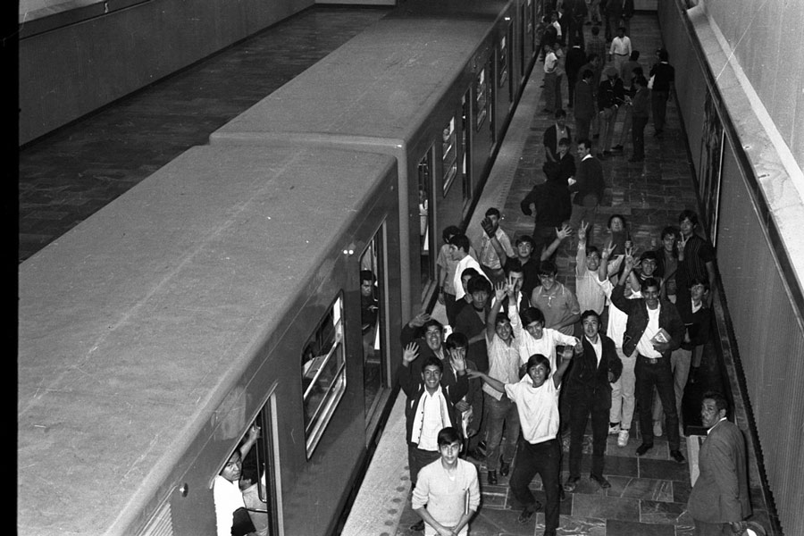
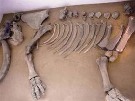
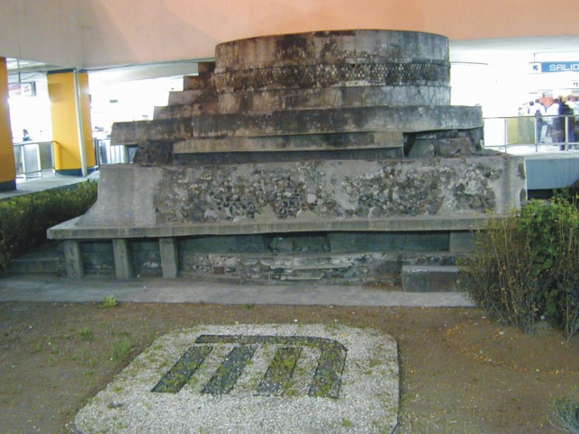
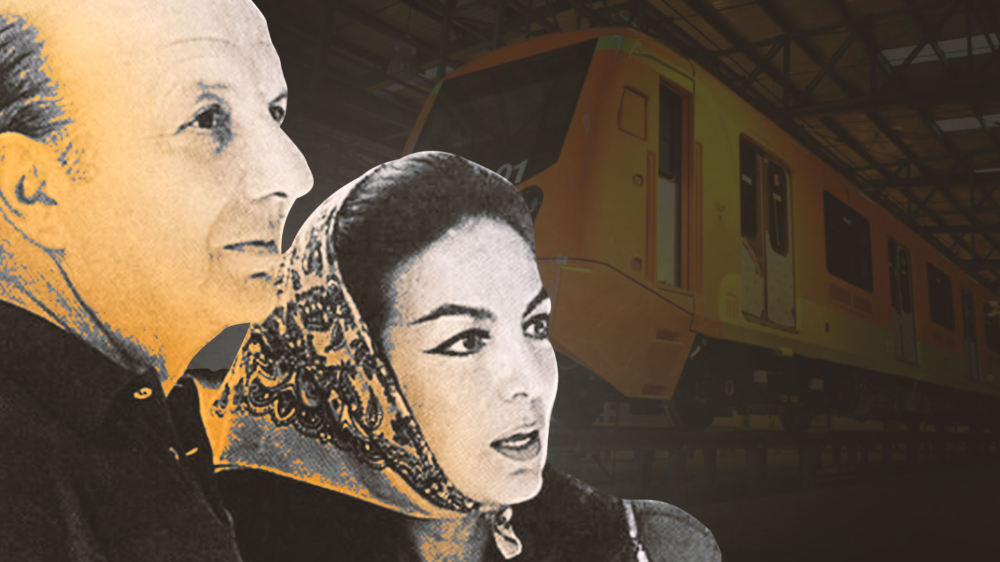
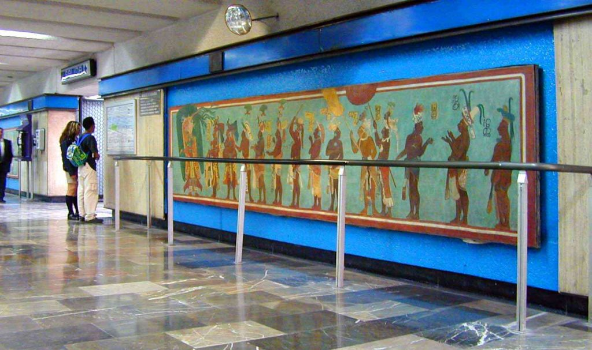

El 4 de septiembre de 1969 inició la historia del Sistema de Transporte Colectivo Metro (STC) en la Ciudad de México. El gran “gusano naranja” cruzó la ciudad de oriente a poniente, conectó la periferia con el centro y desahogó el tránsito, que ya en esos años agobiaba a la capital del país.
MAMUT DE TALISMAN

en el cruce de las avenidas Talismán y Congreso de la Unión, fueron hallados en 1978 los restos fósiles de un Mammuthus archidiskodon imperator adulto, especie que vivió en el norte del Continente Americano durante el período del Pleistoceno o Edad del Hielo, (aproximadamente 12 000 años antes del presente).
EL HALLAZGO EN PINO SUAREZ

Esta estructura formó parte de un extenso centro ceremonial mexica. El área se exploró entre 1967 y 1970 bajo la coordinación de los arqueólogos Jordi Gussinyer y Raúl Arana, originalmente constaba de un patio de grandes proporciones, escalinatas en tres de sus lados, varios adoratorios colocados al centro, cuartos habitacionales conectados entre sí por pasos exteriores, canales y muros, que constituían un corredor de acceso de la calzada de Iztapalapa hasta Tenochtitlan.
EL REGALO DE MARIA FELIX

En algún momento de su carrera, María Félix llegó a confesar que uno de sus muchos amores hizo posible la construcción del Metro capitalino a petición suya. La famosa actriz mexicana declaró en una entrevista que este medio de transporte le pertenecía ya que había sido un regalo de su último esposo.
MURALES DEL METRO

No te pierdas una visita por el mural que se encuentra en la estación Tacubaya en la línea 1, esta obra de Guillermo Ceniceros necesitó un año para ser terminada, en más de 600 m2 se representa un resumen de los códices Ramírez y Boturini que revela la peregrinación de los mexicas desde su salida de Aztlán.
GRACIAS!!!
visita nuestra pagina si quieres saber algo mas del metro
MI METRO CDMX